F5 Identity and Access Management Solutions > 400 Series: Access Automation Source | Edit on
Lab 2: Create a SAML SP Per-Session Policy¶
In this lab your will learn about the API calls necessary to build a SAML SP Access Policy. The graphic below depicts the basic flow required for creating the policy via API.

Access Lab Environment¶
To access your dedicated student lab environment, you will need a web browser and Remote Desktop Protocol (RDP) client software. The web browser will be used to access the Unified Demo Framework (UDF) Training Portal. The RDP client will be used to connect to the jumphost, where you will be able to access the BIG-IP management interfaces (HTTPS, SSH).
Click DEPLOYMENT located on the top left corner to display the environment
Click ACCESS next to jumphost.f5lab.local

Select your RDP resolution.
The RDP client on your local host establishes a RDP connection to the Jumphost.
Login with the following credentials:
- User: f5lab\user1
- Password: user1
Task 1 - Import Postman Collections¶
From the Jumpbox, open Postman via the desktop shortcut or toolbar at the bottom
Note
Dismiss any prompts to update Postman.

Click Yes if prompted for “Do you want to allow this app to make changes to your device?”

Click Import located on the top left of the Postman application

Click Upload Files

Navigate to C:\access-labs\class4\module2\student_files, select student-class4-module2-lab2.postman_collection.json, and click Open
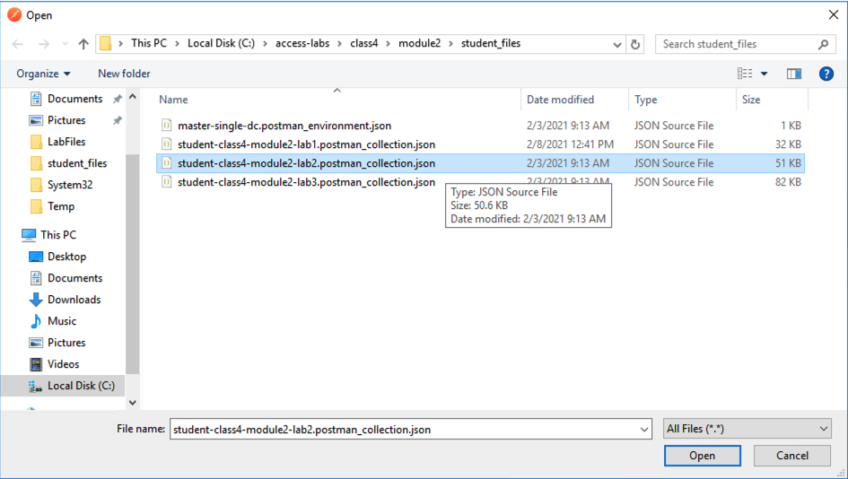
Click Import

A collection called student-class4-module2-lab2 will appear on the left side in Postman
Task 2 - Create Required SAML Objects¶
Expand the student-class4-module2-lab2 collection and Create Access Objects folder. These requests will import the IdP signing certificate, create a IdP Connector, and also the SP Service. If you are unfamiliar with these requests please review Creating a SAML Service Provider(SP) Service for more detail.
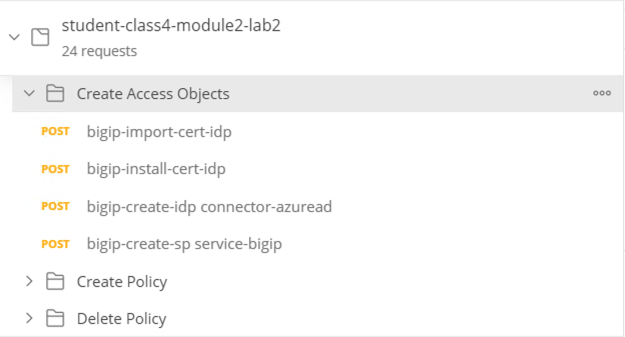
Hover over the collection name student-class4-module2-lab2 with your mouse and click the Arrow icon.
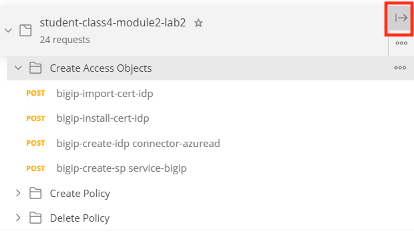
Click the Create Access Objects folder. You will see the four requests in the folder.
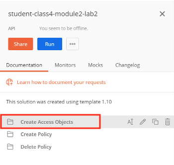
Click the blue Run button and Postman Runner will open.
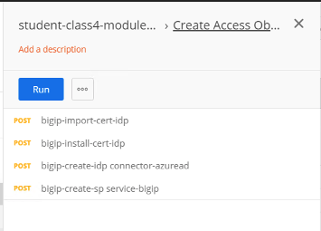
Click the blue button Run student-class… and the API requests will start being sent to the BIG-IP.
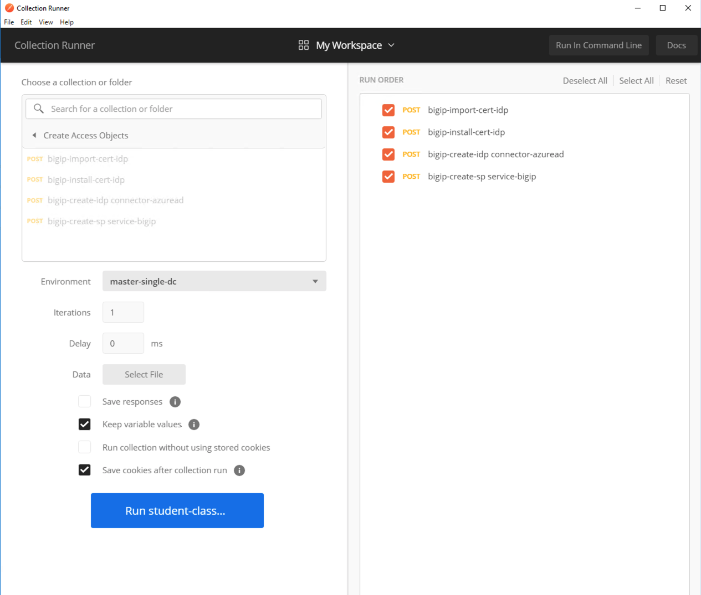
The Pass circle will display a value 4.
Close Runner by clicking the X in the top right corner.
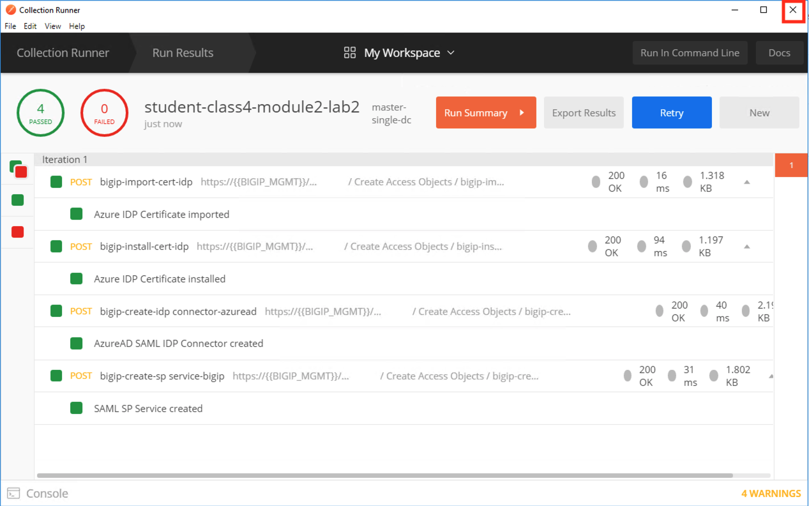
Task 3 - Review the SAML SP Policy-item¶
Expand the Create Policy folder. There are two subfolders containing the baseline policy and also the SAML SP Policy-item. If you are unfamiliar with the requests inside of the baseline policy please review Creating a Baseline Per-Session Policy.
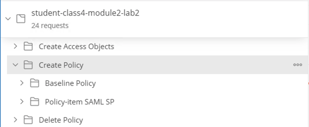
Expand the Policy-item SAML SP subfolder
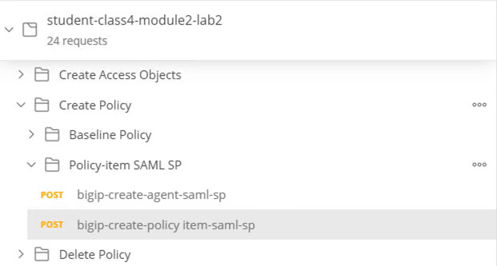
Click bigip-create-agent-saml-sp and then Body. The JSON Body specifies the SP service using the server JSON key. This is the name of the service we just created using runner.
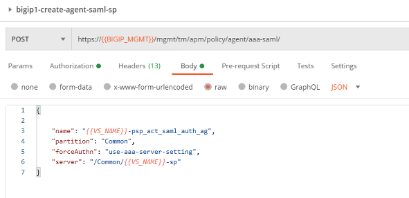
Click bigip-create-policy item-saml-sp and then Body. The JSON Body of the policy-item contains a reference to the previously reviewed SAML agent along with two branch rules. One branch rule contains an expression that if the SAML auth is 1(True) then proceed to the allow terminal. Everything else goes down the fallback branch to the Deny Terminal. Lastly take notice of the SAML SP policy-item name because we will be using it later in the lab.
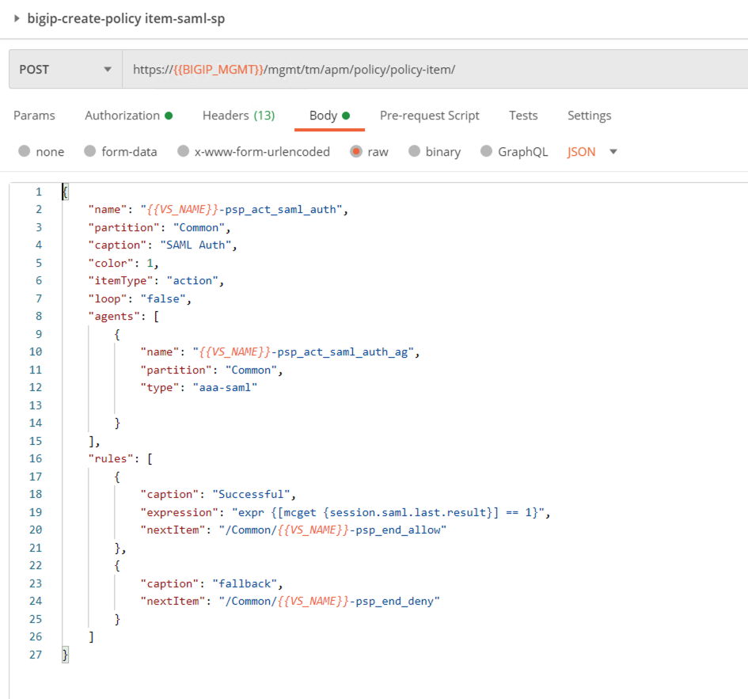
Task 4 - Create a SAML SP policy¶
Expand the Baseline Policy subfolder.
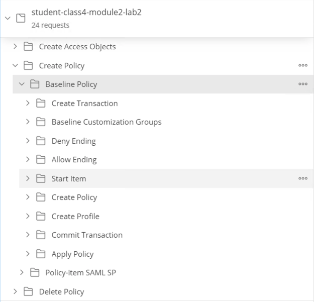
We will now add the policy-item SAML SP folder to the baseline Policy folder in its proper place. Click and drag the policy-item SAML SP folder between the Allow Ending and Start Item folders.
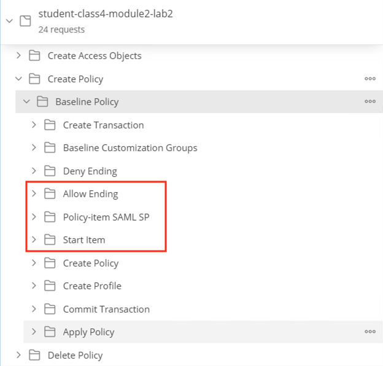
Now the the requests are in the folder we need to modify a couple baseline requests to ensure the policy is created correctly.
First, we need to adjust the start item’s rule to go to the SAML SP Policy-item. Open the Start Item folder, click on bigip-create-policy item-start, and then Body.
Change the NextItem key value from “/Common/{{VS_NAME}}-psp_end_deny” to “/Common/{{VS_NAME}}-psp_act_saml_auth”.
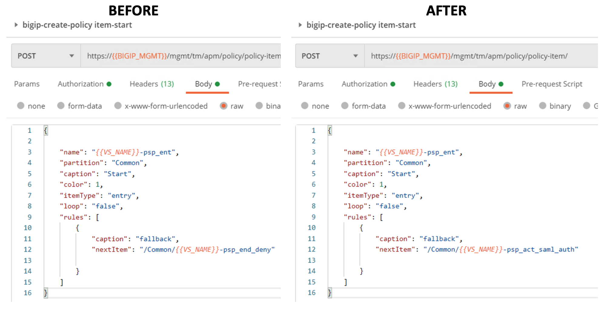
After you are done editing the request, click Save in the upper right corner. Runner will not pickup any changes that are not saved causing the automation to fail.
Now the workflow of the policy is complete. The flow of the policy is as follows: A user enters the start policy-item, proceed to the SAML Auth Policy-item.Then based on success or failure of SAML authentication a user will proceed to the Allow or Deny Terminal.
Every Policy-item must be defined inside of the items list of the policy. Expand the Create Policy subfolder located inside the Baseline Policy folder, click on bigip-create-policy and then Body.
Copy and paste the below JSON inside the items array in front of the allow Terminal. The placement of policy-items inside of the items array is not important to the order they used within branch rules or Visual Policy Editors.
{ "name": "{{VS_NAME}}-psp_act_saml_auth", "partition": "Common" },
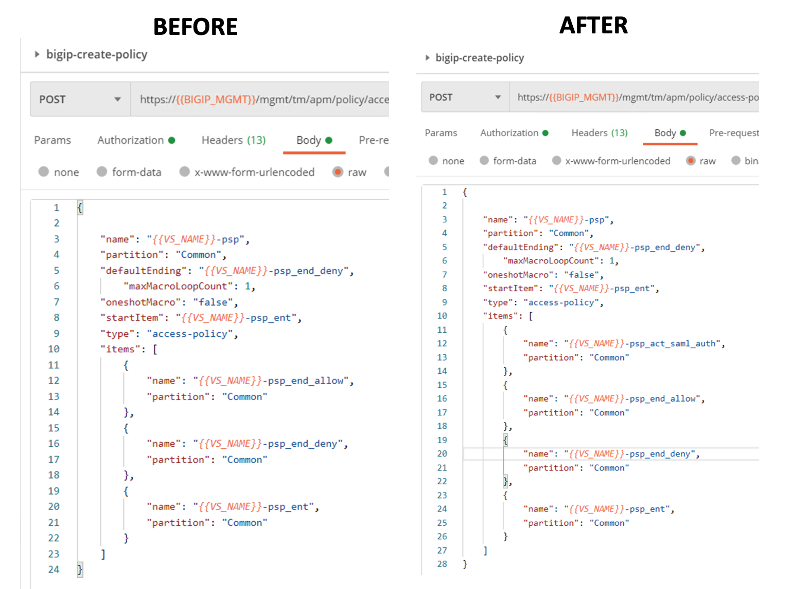
After you are done editing the request, click Save in the upper right corner. Runner will not pickup any changes that are not saved causing the automation to fail.
Now that we have the automation updated let’s deploy the policy. Hover over the Collection name student-class4-module2-lab2 with your mouse and click the Arrow icon.
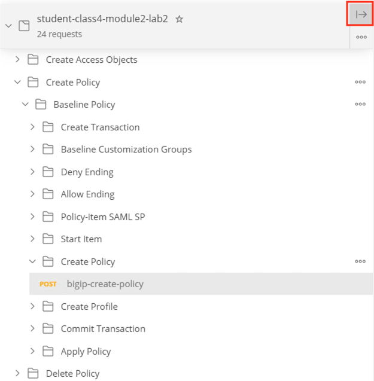
Click student-class4-module… to return to the main folder if you are not already there.
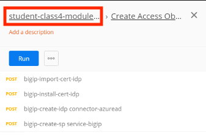
Click the Create Policy folder.
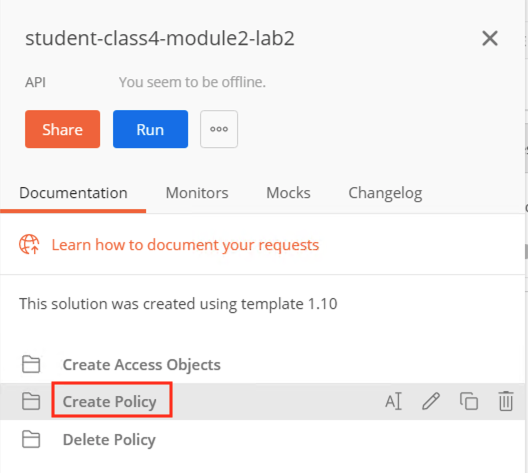
Click the blue Run button and Postman Runner will open.

Click the blue button Run student-class… and the API requests will start being sent to the BIG-IP.
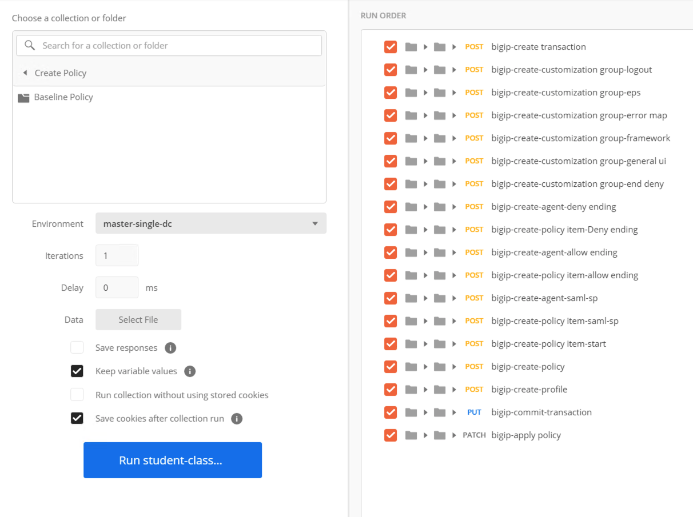
The Pass circle will display a value 2.
Close Runner by clicking the X in the top right corner.
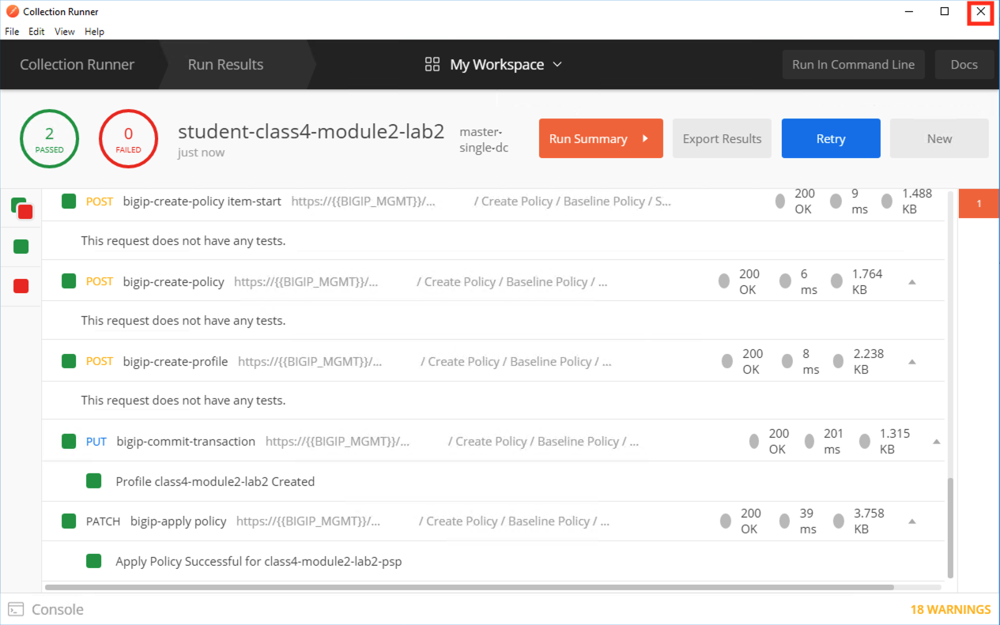
From the jumphost, open browser and navigate to https://bigip1.f5lab.local
Login to the BIG-IP GUI with the following credentials:
- Username: admin
- Password: admin
Navigate to Access>>Profiles/Policies>>Access Profiles (Per-Session Policies). Do not click the plus symbol.

The policy class4-module2-lab2-psp you created via automation is displayed. Click Edit to view Visual Policy Editor(VPE).
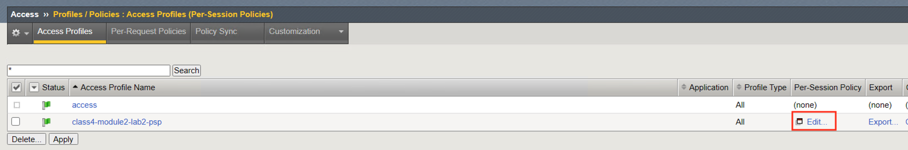
The policy was successfully deployed with the SAML Auth Policy-Item.

Task 5 - Lab Cleanup¶
Expand the Lab Cleanup subfolder and its subfolders. There are a total of five requests. The first two requests delete the Policy, while the last three requests delete the SP Service, IdP Connector, and IdP signing certificate. To understand these requests further review Deleting an Access Profile or Deleting a SAML Service Provider(SP) Service Configuration
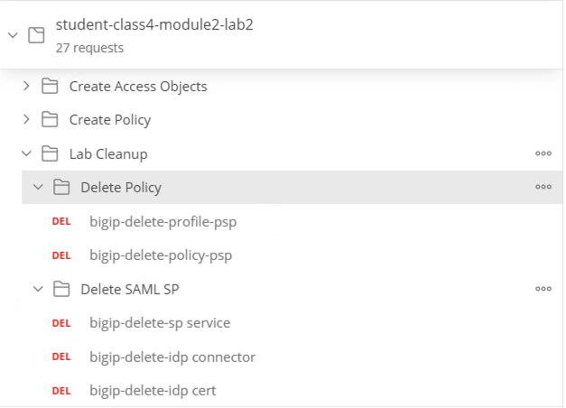
Hover over the Collection name student-class4-module2-lab2 with your mouse and click the Arrow icon.

Click student-class4-module2-lab2 to return to the main folder if you are not already there.
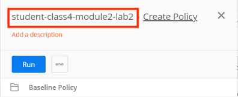
Click the Lab Cleanup folder.
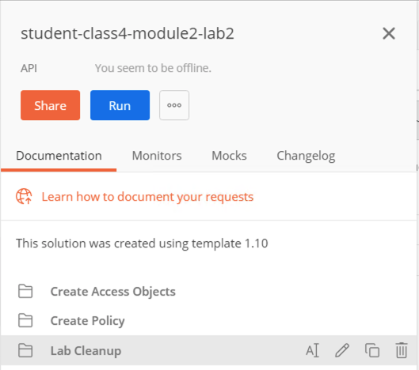
Click the blue Run button and Postman Runner will open.
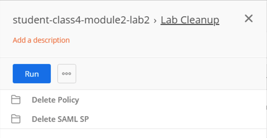
Click the blue button Run student-class… and the API requests will start being sent to the BIG-IP.

The Pass circle will display a value of 5.
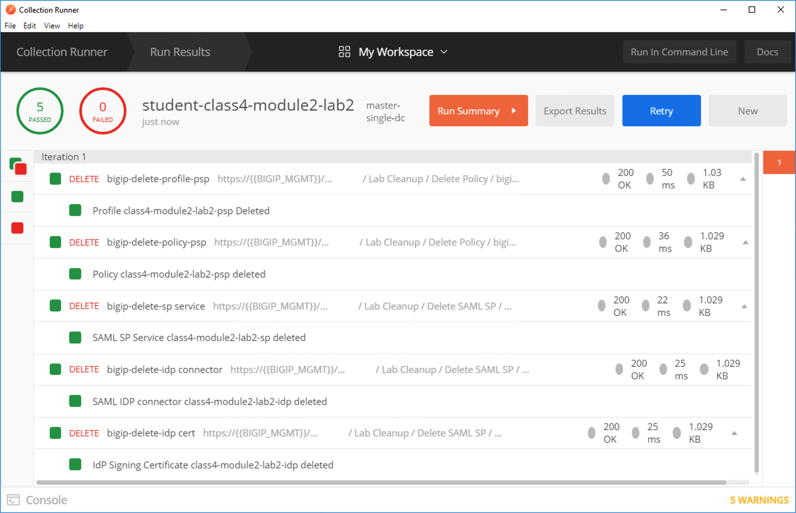
From Postman, Click the 3 dots on the bottom right of the student-class4-module2-lab2 Collection.
Click Delete
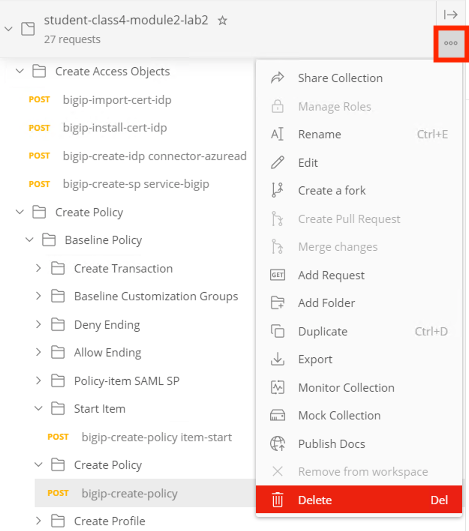
This concludes the lab on creating and deleting a SAML SP Access Policy.